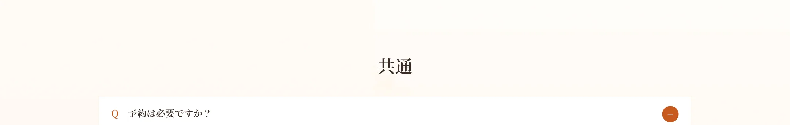
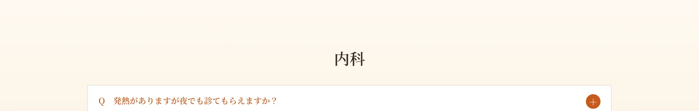
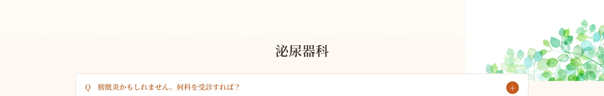
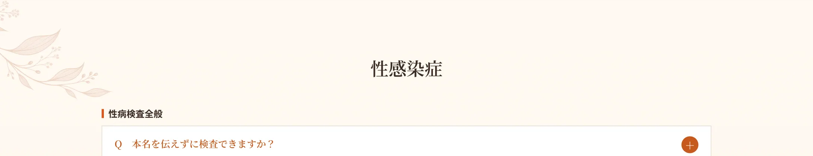
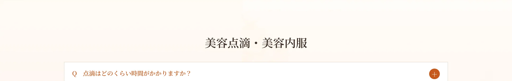
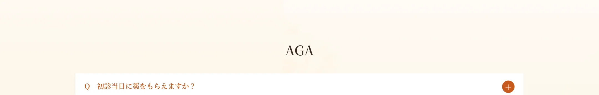
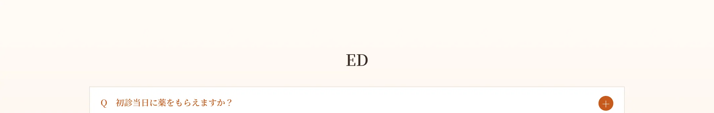
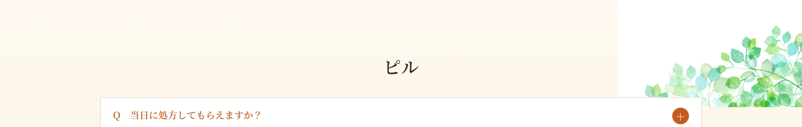
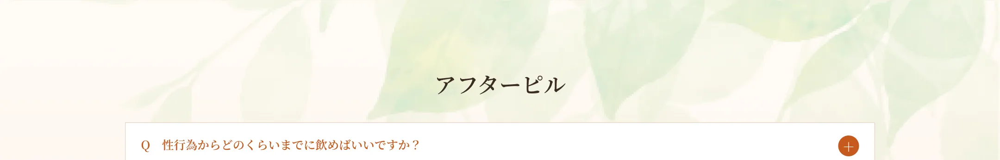
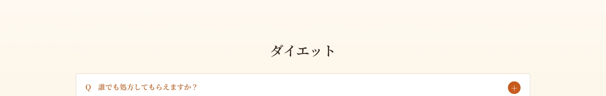

A.完全予約制です。LINEまたはWebから24時間ご予約いただけます。予約なしの場合はお待ち時間をいただくことがあります。
A.診療は深夜23:30まで(最終受付22:30)。お仕事帰りや、他院が閉まる時間帯でも受診いただけます。
A.火・土 16:00〜23:30、水・木・金 18:30〜23:30、日 15:00〜21:00です（月曜休診・最終受付22:30）。最新の診療時間はお知らせ欄でご確認ください。
A.現金のほか各種キャッシュレス決済に対応予定です。詳細は受付にてご案内します。
A.保険診療を受ける場合は保険証（マイナ保険証）をお持ちください。自費診療のみの場合は不要です。
A.性感染症の検査は匿名で受けられます。完全個室・番号でのお呼び出しのため、ほかの患者様と顔を合わせにくい環境です。
A.AGA・ED・ピル・ダイエット・美容点滴などの自費診療は保険適用外です。料金は各診療ページでご確認いただけます。
A.院内処方のため、診察後その日のうちにお薬をお渡しします。
A.可能です。ご予約時またはご来院時に、ご相談になりたい内容をお知らせください。
A.掲載している料金はすべて税込表示です。
A.メニューにより異なります。詳しくはご予約時・受付にてご案内します。
A.JR新宿駅から徒歩6分、歌舞伎町1丁目の第22東ビル2階です。
A.完全予約制のため、ご予約の時間に合わせてご案内しています。予約なしの場合はお待ち時間をいただくことがあります。

A.対応しています。コロナ・インフルA/Bの検査も可能です。ご予約時に発熱の旨をお知らせください。
A.診察のうえ内服や点鼻薬を院内処方します。症状が強い場合は点滴もご相談いただけます。
A.血圧測定・血液検査のうえ継続的な治療に対応します。夜間も通院しやすい環境です。

A.泌尿器科で対応します。頻尿・排尿時痛・残尿感などがあれば尿検査で確認し、当日院内処方が可能です。
A.尿検査など即日結果が出る検査もあります。結果に応じて当日から治療を開始できる場合があります。
A.どちらも受診いただけます。完全個室・番号制でプライバシーに配慮しています。
A.性感染症の検査にも対応しています。詳しくは性感染症ページをご覧ください。

A.匿名での検査が可能です。受診歴も他の方に知られることはありません。完全個室・番号でのお呼び出しに対応しています。
A.HIV・クラミジア・梅毒など即日結果が可能な検査があります。必要に応じて当日治療も行えます。
A.心配な機会があった方は、症状がなくても検査いただけます。
A.再感染を防ぐため、パートナーの同時検査・治療を推奨しています。
A.淋菌・クラミジアのPCR検査を院内で行い、最短90分で結果をお伝えできる体制です（混雑状況などにより前後する場合があります）。
A.PCRはコロナで有名になりましたが、もともと性感染症など幅広い病原体を高精度に調べる検査です。
A.PCRは初期感染も見逃しにくく精度が高いのが特長です。検査に適した時期は病原体により異なるためご相談ください。
A.本名不要の匿名検査に対応しています。
A.感染機会から24時間以上経過していれば検査可能です。無症状でも心配な機会があれば検査をおすすめします。
A.うがい液で咽頭クラミジアの検査ができます。
A.即日結果が出る検査と、精度の高い数日かかる検査があります。
A.再感染を防ぐため同時の検査・治療を推奨します。
A.淋菌は内服だけでは治りにくいことがあり、当院では注射・点滴での治療を基本としています。
A.うがい・採取で咽頭淋菌の検査ができます。
A.複合感染のことがあるため同時検査が可能です。
A.効果が不十分な場合は薬を変更して再治療します。
A.即日検査に対応しています。陽性の場合は数日かかる確認検査を行います。
A.早期梅毒では単回の注射で治療が完了する場合があります。病期により回数が異なります。
A.症状が消えても菌が残っていることがあります。検査・治療が必要です。
A.確認検査で治癒が確認できるまで控えることが大切です。
A.第4世代検査は4週以降が目安です。確実な確認には3か月後の検査を推奨します。
A.即日検査に対応しています。確認検査が必要な場合は数日かかります。
A.匿名での検査が可能です。
A.確認検査のうえ、専門の医療機関をご紹介します。
A.必ずしも性行為が原因とは限らず、体調や薬の影響でも起こります。
A.再発しやすい場合があります。症状が続くときはご相談ください。
A.院内処方で当日お渡しできます。
A.視診で判断できることもあり、必要に応じて検体採取を行います。
A.タオルや下着など湿った環境を介して感染することがあります。
A.再発しにくさの点から内服をおすすめすることが多いです。
A.再感染防止のため同時の治療を推奨します。
A.院内処方で当日お渡しできます。
A.ウイルスが体内に残るため再発することがあります。再発抑制の治療もあります。
A.早い段階での治療開始が改善につながりやすいです。
A.自覚症状がなくてもウイルスを排出していることがあり、感染の可能性があります。
A.院内処方で当日お渡しできます。
A.マイコプラズマが原因の場合、クラミジア・淋菌の薬では治らないことがあります。検査をおすすめします。
A.感染機会から24時間以上経過してから検査が可能です。
A.効果判定のため2〜3週間後の再受診をおすすめします。
A.当院では自費診療での対応です。
A.無症状で進行することがあるため、心当たりがあれば確認をおすすめします。
A.B型肝炎を含むセット検査もあります。
A.専門の医療機関をご紹介します。
A.当院では自費診療での対応です。

A.約20〜40分です。
A.二日酔い対策のメニューもあり、深夜まで対応しています。
A.美肌セットなど、目的別のセットからお選びいただけます。
A.プラセンタなど男女問わず受けられるメニューがあります。

A.院内処方で初診当日にお渡しできます。
A.個人差がありますが、継続使用で実感されることが多いお薬です。
A.性機能や肝機能などに関する副作用の可能性をご説明し、状態に合わせて処方します。
A.完全個室・呼び出し番号制で、他の患者様と顔を合わせにくい環境です。

A.院内処方で初診当日にお渡しできます。
A.触診はなく、問診（IIEF-5）を中心に進めます。
A.急な血圧低下の恐れがあるため、服用前に必ず医師にご相談ください。
A.薬の作用を強めるため、摂取後24時間以上空けてください。
A.完全個室・呼び出し番号制で、他の患者様との接触を最小限にしています。

A.問診・血圧測定のうえ最短30〜40分で当日処方が可能です。
A.生理痛・PMS・生理不順などの改善目的でも処方します。
A.血栓症リスクの確認のため、初診時と半年に1回の検査をお願いしています。
A.多くは2か月ほどで和らぎます。強い場合はご相談ください。

A.72時間以内の服用が推奨されます。早いほど効果が高いため、お早めにご来院ください。
A.深夜23:30まで（最終受付22:30）対応しています。
A.問診のうえ処方します。
A.服用後2時間以内に吐いた場合は、もう1錠服用していただきます。
A.後遺症や将来の妊娠への影響はありません。

A.BMIや健康状態を医師が確認し、適応を判断したうえで処方します。
A.経口薬（リベルサス・フォシーガ・メトホルミンなど）もあります。
A.目安は1〜3ヶ月で、個人差があります。
A.GLP-1薬剤は低血糖の副作用がほとんど起きないとされています。